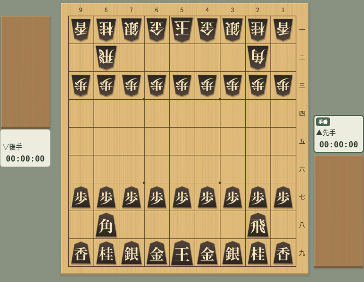
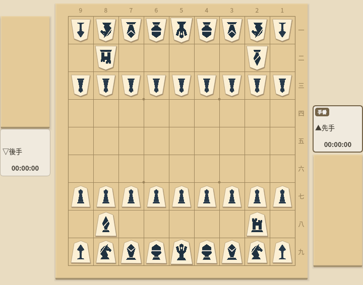
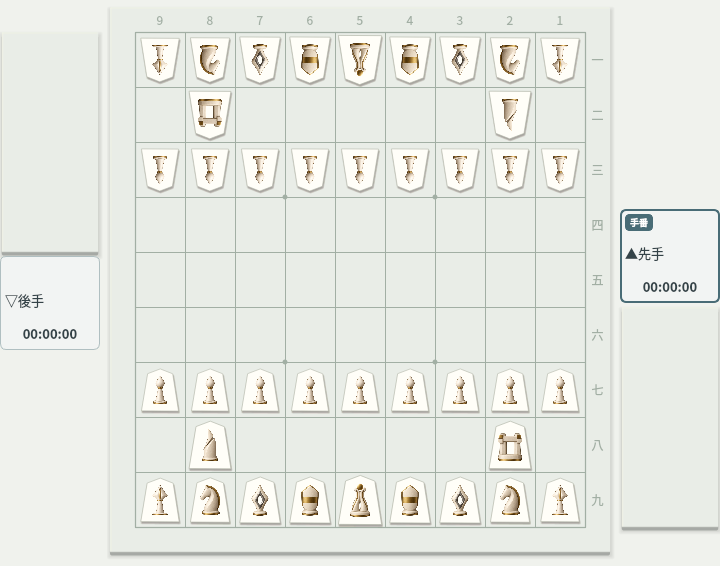
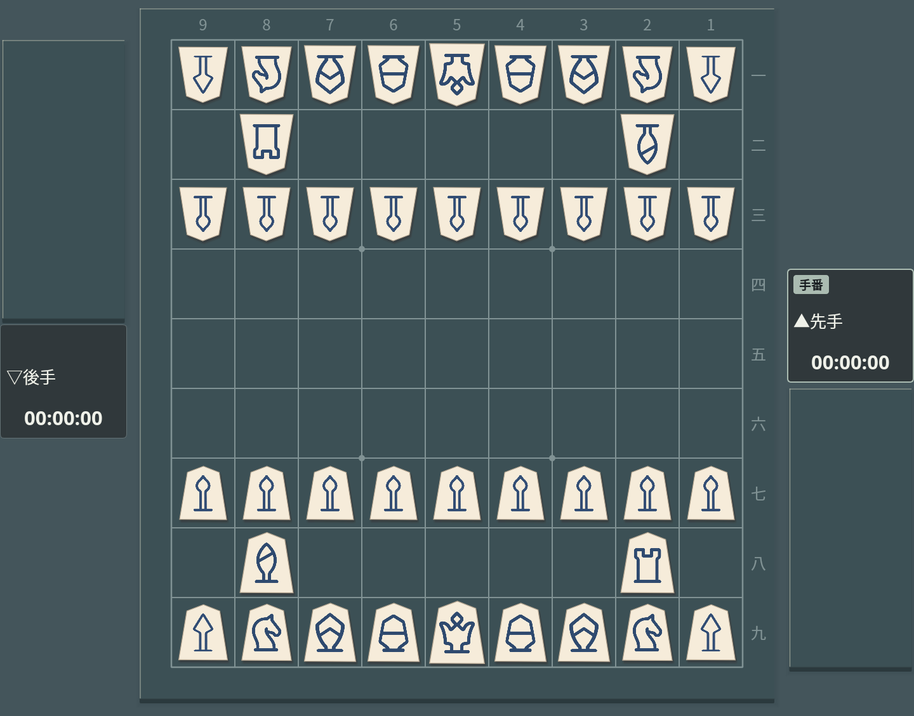

Piece Styles
31 piece styles with a shared traditional shape
Choose Pieces in the Appearance Window
Open View → Game Appearance… → Pieces to choose Standard Pieces or one of 30 variations. The styles are grouped into Tiger Grain, Wood Tones, Light Colors, Dark Colors, Symbolic, and Chess. Your selection applies immediately and is restored on the next launch.
The former wooden set is now the standard, with its artwork unchanged. Saved selections of retired sets automatically migrate to Standard Pieces.
The same pieces appear on the main board, in hand, in principal variations, and in tsume boards. Adjust colors, piece size, and shadows in Game Appearance → Details.
Standard Pieces
Pale wood, fine outlines, subtle grain, and Mincho lettering

Promoted pieces use red lettering. Promoted lance, knight, and silver are marked 杏, 圭, and 全.
20 Variations
Every variation keeps the shape, size, and Mincho lettering of Standard Pieces, with different grain patterns and colors. Standard Pieces remains the default.
| Group | Piece Styles |
|---|---|
| Tiger Grain | Light Tiger Grain, Silk Tiger Grain, Amber Tiger Grain, Red Tiger Grain, Golden Tiger Grain |
| Wood Tones | Pale Wood, Fine Straight Grain, Amber Straight Grain, Bamboo Grain, Walnut |
| Light Colors | Linen, Pale Cherry, Celadon, Moon White, Wisteria Gray |
| Dark Colors | Ebony, Iron Navy, Forest Green, Grape, Ink and Gold |
Light pieces use dark lettering, while dark pieces use light lettering. Promoted pieces are distinguished by red or warm coral lettering.



Ebony
Sengoku Kanji
Choose Sengoku Kanji in the Symbolic group for bold, abstract glyphs combining shogi characters with samurai helmet shapes. The outlines, relative piece sizes, and player orientations match Standard Pieces.
Ivory surfaces carry charcoal lettering, with vermilion lettering for promoted pieces. Promoted silver, knight, and lance use 全, 圭, and 杏.

Chess-inspired Pieces: Facet, Atelier, and Ribbon
The Chess group offers nine sets: geometric Facet, sculptural Atelier, and outlined Ribbon, each in Wood, White, and Ink. Crowns, castles, horses, shields, and spears identify the pieces without kanji or letters.
The pentagonal outlines and relative sizes match Standard Pieces. Promoted symbols turn red, and both kings share the same crown. Movement, promotion, and drops follow shogi rules.
Select a matching Recommended Combination to coordinate the board, stands, and background. Ink pairs a dark board with light piece surfaces.


Facet (Wood)


Atelier (White)


Ribbon (Ink)